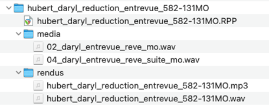

Projet B - Réduction d’entrevue¶
 Source: https://www.theguardian.com/
Source: https://www.theguardian.com/
- Travail individuel | Fichier audionumérique (.wav et .mp3) avec dossier de travail
- Date de remise : Cours 8 (avant le cours)
OBJECTIFS D’APPRENTISSAGE¶
Réaliser un montage sonore de qualité.
TÂCHE¶
Vous devez réduire un enregistrement audio présentant un rêve, et faire un montage sonore professionnel.
Vous devrez :
- Extraire les éléments jugés essentiels et réduire l’enregistrement de votre rêve (Projet A) pour en faire un montage fluide et professionnel.
- L’enregistrement initiale doit être d’une durée minimale de 2 minutes.
Durée exacte du montage final : 30 secondes.
CONSIGNES¶
Le montage doit être exactement de 30 secondes.
Il s’agit d’une réduction d’entrevue où l’on vous entend présenter votre rêve.
Le montage est « pur ». Il doit contenir des sons provenant uniquement de l’enregistrement en limitant au maximum le bruit de fond en arrière-plan (enregistrement en studio très recommandé).
Aucun paysage sonore en arrière-plan.
REMISE¶
Un dossier de travail bien identifié au nom de l’étudiante ou de l’étudiant doit être remis sur le TEAMS avant le début du cours dans la section
- Fichiers –> « remises ».
Remise
[nom famille]_[prénom]_reduction_entrevue_582-131MO
Le dossier principal doit inclure :
- Le fichier Reaper et les fichiers audios sources.
-
Les exportations finales bien identifiées et aux formats suivants :
- .wav (24 bits, 48 kHz, stéréo) :
[nomFamille]_[prénom]_reduction_entrevue_582-131MO.wav
- .mp3 (128kbit/s) :
[nomFamille]_[prénom]_reduction_entrevue_582-131MO.mp3
- .wav (24 bits, 48 kHz, stéréo) :
Structure du dossier de remise :

Source: reaper.fmCRITÈRES D’ÉVALUATION¶
- Organisation des pistes adéquate dans le logiciel ;
- Exécutions techniques du montage précises, méticuleuses et achevées ;
- Respect des consignes.
Grille d'évaluation¶
| Critère | Excellent | Bien | À améliorer | Insuffisant |
|---|---|---|---|---|
| 1. Organisation des pistes | Organisation des pistes et identification adéquates. | Organisation des pistes et identification adéquates ou nécessitant des ajustements mineurs. | Organisation des pistes et identification un peu confuses ou nécessitant des ajustements majeurs. | Organisation des pistes et identification confuses pouvant être problématiques pour le montage. |
| 2. Exécution technique : coupes et transitions | Travail méticuleux. L'ensemble des coupes et transitions est précis et achevé. | Travail assez méticuleux. La majorité des coupes et transitions est précise et achevée. | Travail plus ou moins méticuleux. Quelques coupes et transitions sont précises et achevées. | Les coupes et transitions dans leur ensemble semblent inachevées. |
| 3. Respect des consignes | Durée précise de 30 secondes. Exportations audio aux bons formats : 48 kHz, WAV, 24 bits, stéréo et MP3 128 kbit/s. |
Durée assez précise (moins de 5 secondes d'écart). Au moins une exportation audio au bon format. |
Durée peu précise (moins de 15 secondes d'écart). Exportations audio aux mauvais formats. |
Durée imprécise (plus de 15 secondes d'écart). Aucune exportation audio. |
| Pénalité | Vérification |
|---|---|
| Dossier et exportations audio correctement identifiés selon la nomenclature : [nomFamille]_[prénom]_montage_582-344MO | ☐ |
| Enregistrement initial du rêve d'une durée minimale de 2 minutes | ☐ |
| Aucun bruit de fond important dans l'enregistrement initial | ☐ |
| Aucun paysage sonore en arrière-plan dans l'enregistrement initial | ☐ |
| Si l'enregistrement initial est non conforme, reprise obligatoire de l'enregistrement et du montage | ☐ |
| Pénalités appliquées : | _____________________________________ |